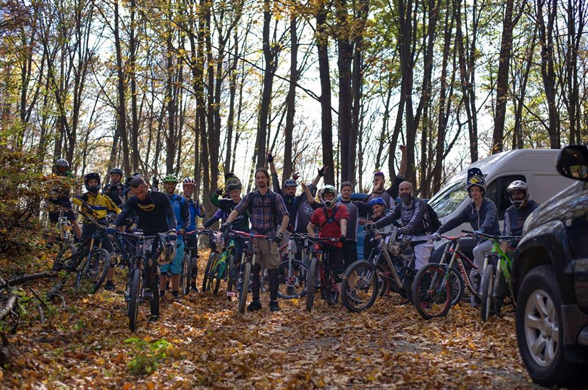
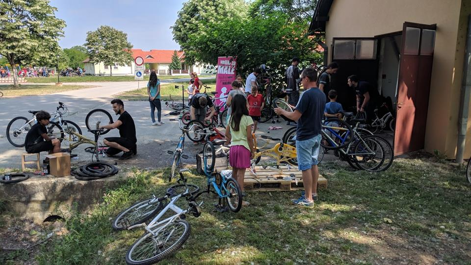
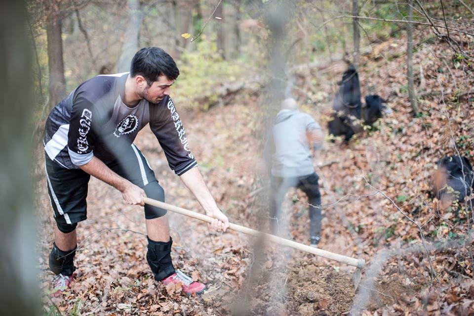

O nama
Ekstremni biciklizam u Osijeku vuče svoje korjene još iz prošloga stoljeća, ali tek početkom 2000-ih godina nekolicina entuzijasta se počela skupljati u grupnim vožnjama kroz grad te na lijevoj obali Drave gdje su počeli nastajati prve staze i jumpovi. Vozilo se svašta, od maminog kruzera, kojekakvih MTB-a čija je prednja suspenzija od 100mm hoda odrađivala jedva 20mm, pa sve do čeličnih BMX-a koji su težili skoro 20kg.
Dečki su godinama shredali gradom, preskakivali stepenice i šlogirali bakice na pločniku, a kako su počeli pohoditi i natjecanja, 2003. godine su se prozvali Weekend Warriorsima. Godine su prolazile, a kako su dečki uskoro i sami počeli organizirati natjecanja u sklopu Pannonian Challengea, vrijeme je bilo da klub postane i formalan te se u sobama državnog ureda 31.7.2007. rodio službeni Biciklistički Klub Weekend Warriors.
Kroz više od 10 godina djelovanja, klub je organizirao dual-fight i four cross utrke na Pannonian Challengeu i Enduro Jamove u Gaziju. Članovi kluba su vozili na natjecanjima diljem Hrvatske, pa i u susjednim zemljama te širili dobar glas o svom gradu Osijeku i stazama koje su izgradili na obližnjoj Krndiji.
Biciklistički Klub Weekend Warriors već više od desetljeća promovira čuvanje prirode, humanitarni rad, zdrav život, sport i druženje, a najviše biciklizam i njegove ekstremne discipline. Kroz sve godine svog postojanja, klub je ulagao mnogo napora u izgradnju brojnih biciklističkih staza. Na lijevoj obali Drave je izgrađena 4x staza te dvije dirt linije. U Gaziju je nastala enduro staza u samo nekoliko mjeseci, a u Orahovici smo izgradili 3 enduro/downhill staze, a još se puno novih planira.
Klub je tijekom godina izmijenio mnogo članova, neki su prestali voziti, neki su se odselili, ali svi se povremeno vrate kako bi se provozali sa preostalima. Trenutnu upravu kluba čine Andrej Flauder (predsjednik), Mario Andrew Benc (dopredsjednik) i Ivo Anić (tajnik).
Enduro Jam
Biciklistički Klub Weekend Warriors u suradnji sa Savjetom Mladih Osječko-baranjske županije već dvije godine za redom održava Enduro Jam u Gaziju. Događaj se održava sredinom jeseni kako bi se uz opušteno i nenatjecateljsko druženje zatvorila biciklistička sezona. Vozači sami biraju jednu od nekoliko staza koje će voziti, omogućeno je vraćanje uz stazu i ponavljanje sekcija, a na kraju uz grah se izmjenjuju iskustva i broje ozlijede i eventuelne štete na biciklima. Prijevoz kombijima je osiguran do vrha staze, a noćenje je moguće u planinskoj kući Tivanovo u Gaziju.
 Humanitarni rad
Da ne mislimo samo na sebe i na zabavu pokazuje i naš humanitarni angažman. Već četiri godine za redom članovi kluba pomažu dječjem selu Ladimirevci u održavanju bicikala za njihove najmlađe štičenike. Djece ima mnogo, a svatko ima svoj bicikl koji se tijekom godine pokvari ili se probuši guma. Nažalost, djeca i radnici u dječjem selu nemaju potrebnu opremu niti djelove kako bi nadomjestili štetu. Stoga BK Weekend Warriors, u suradnji sa ostalim biciklističkim klubovima iz okolice, dolazi u pomoć kako bi djeci omogućio daljnje uživanje u vožnjama i razvijanje ljubavi prema biciklima.
 Pravljenje staza
Već više od desetljeća članovi kluba Weekend Warriors uređuju staze u Orahovici i Gaziju. Brojeći sve napravljene rukavce, Krndija sada broji oko 4 downhill/enduro staze. Sječa stabala prije nekoliko godina je uvelike unazadila naš progres, ali zato se trudimo obnoviti staze i dodavati elemente svakog vikenda kada vrijeme to omogući. Naše staze kroz godinu postaju sve zabavnije, imaju sve više elemenata, a svake godine im se povećava i broj. Vozači koji nam dođu u posjet ostanu oduševljeni njihovim dizajnom te nam se vjerno vračaju.

Kontakt
| BK Weekend Warriors Prominska 7, 31000 Osijek OIB: 77739060735 |
PREDSJEDNIK: Andrej Flauder DOPREDSJEDNIK: Mario A. Benc TAJNIK: Ivo Anić |
TELEFON: +385 91 190 7094 +385 98 666 936 +385 98 9105 725 E-MAIL: hello@weekendwarriors.bike |